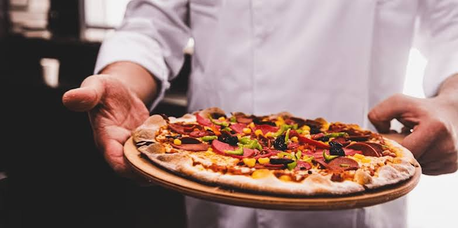

Misión
Ofrecer pizzas artesanales de calidad, elaboradas con ingredientes frescos y sabores especiales, brindando una atención amable y procurando que cada pedido llegue caliente y a tiempo.
Mario's Pizza
Nos apasiona preparar pizzas artesanales con ingredientes frescos, sabores únicos y la calidad que mereces.
En Mario's Pizza creemos que una buena pizza puede convertir cualquier momento en una ocasión especial. Por eso, nos enfocamos en ofrecer pizzas artesanales preparadas con dedicación e ingredientes de calidad.
Nuestra propuesta combina masa de fermentación lenta, ingredientes frescos y combinaciones de sabores que buscan brindar una experiencia deliciosa en cada pedido.
Queremos acompañarte en tus cenas casuales, reuniones con amigos, noches de películas y celebraciones familiares, llevando nuestras pizzas hasta tu hogar.
Conoce nuestro menú
Ofrecer pizzas artesanales de calidad, elaboradas con ingredientes frescos y sabores especiales, brindando una atención amable y procurando que cada pedido llegue caliente y a tiempo.
Ser una opción reconocida de pizza artesanal en Cuautitlán Izcalli y zonas cercanas, destacándonos por nuestro sabor, calidad y compromiso con nuestros clientes.
Trabajar para ofrecer productos deliciosos, un servicio atento y una experiencia que motive a nuestros clientes a volver a elegirnos.
Seleccionamos ingredientes frescos y cuidamos la preparación de nuestras pizzas.
Buscamos ofrecer combinaciones únicas para disfrutar en cada ocasión.
Nos esforzamos por brindar una buena atención y entregar los pedidos a tiempo.
Reúne a tu familia y amigos y disfruta del sabor de Mario's Pizza.
Ver nuestros productos